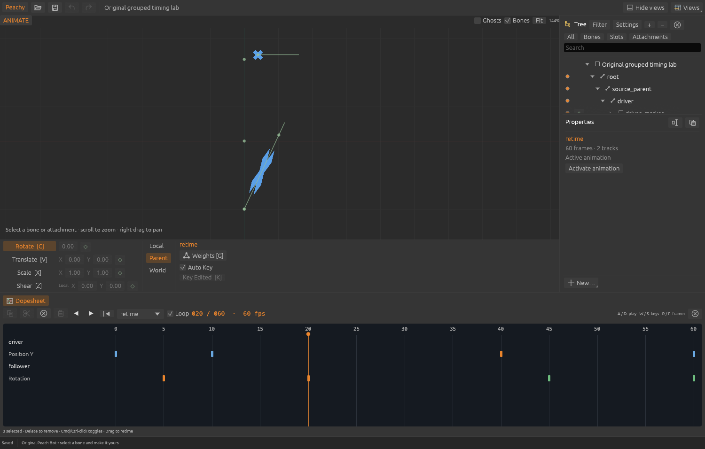
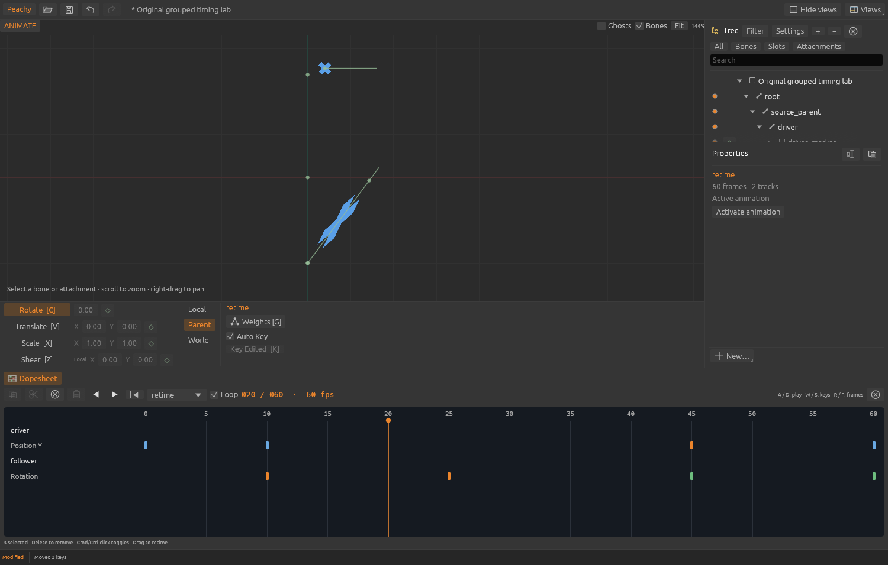
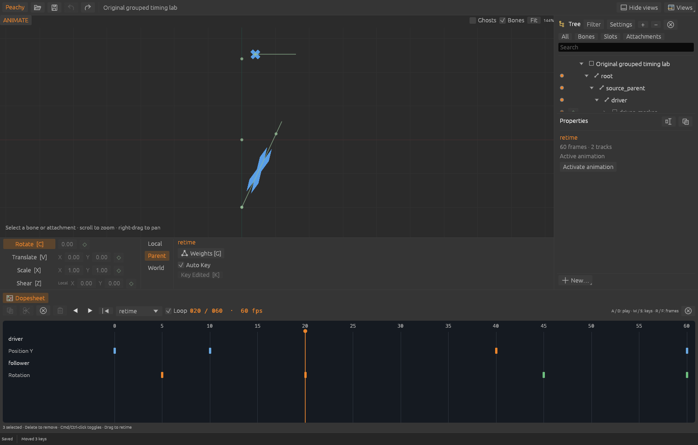
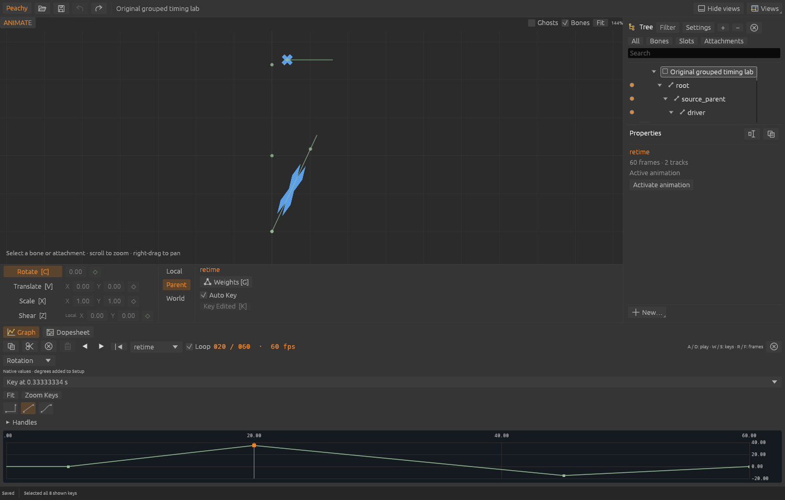
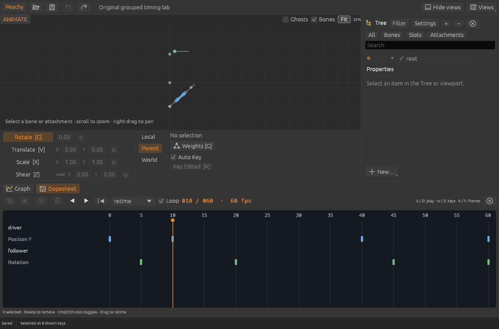
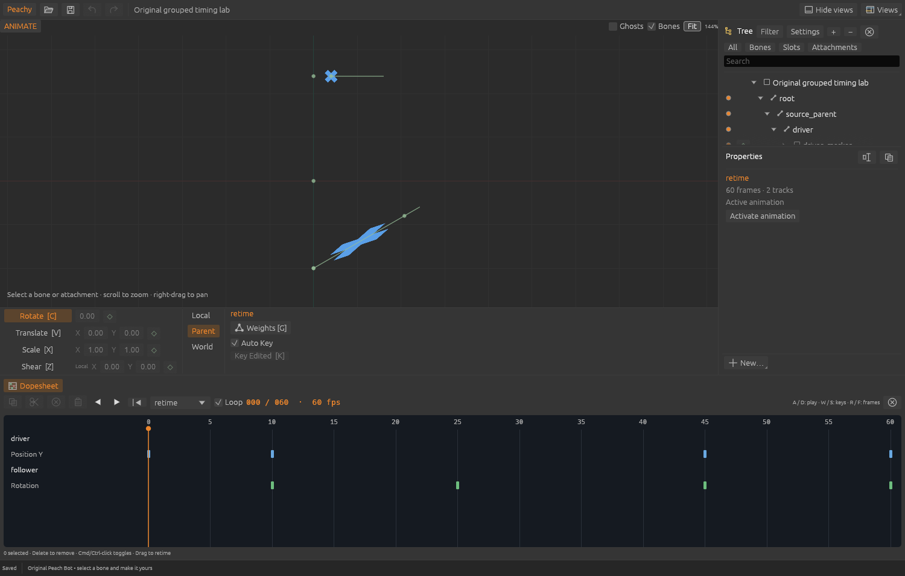
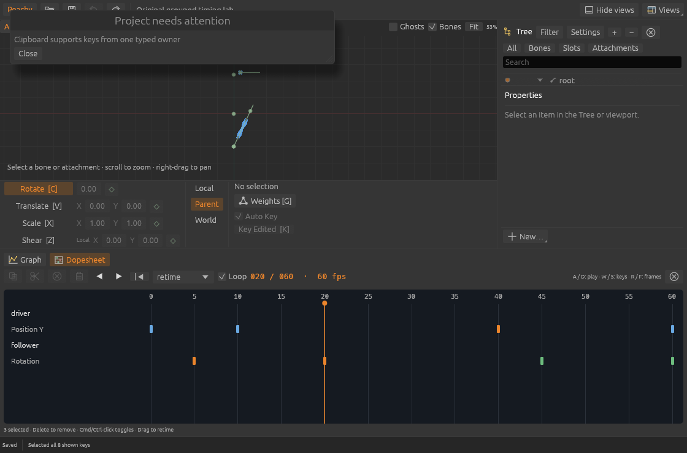

Before: three keys, two owners
Native input + exact document · cursor20

Driver40 and follower5/20 are selected together. Tree selects the animation.
November 15, 2026 · native v23 · 63 commands / 18 MCP tools. Ordinary selection, movement and deletion now share exact typed identities across owners. These are Peachy native captures of original blue artwork. Installed Spine 4.3.26 reference captures remain private. Full pixel and workflow parity is still open.
Scalar results and image hashes · Measured contract and limits · Original editable project · 25 authoring commands
| Inspection | Verified outcome | Limit |
|---|---|---|
| Native OS input and exact state | Cmd selection, three-key drag, one-step Undo/Redo, held Escape/block/release, eight-key Select All/Delete, typed Graph routing, minimum window, Save/fresh reopen. | Two Bone owners; native pending baseline empty. |
| Actual MCP stdio | 41 requests create from blank root and one PNG; 25 authoring commands, five rejected read-only queries, 12 poses, exact history and persistence. | Independent headless session; saved-file handoff. |
| Focused core and UI checks | Mixed typed owners, exact payloads, f64 IK controls, collisions, pending/history, read-only metadata and cache invalidation. | Other typed owners have no new native acceptance here. |
| External runtime | 104 baseline and 104 retimed poses pass 0.001; maximum world error 0.00001201, region error 0.00001526. | Geometry agreement does not establish authored interchange equality. |
Remaining work: one-origin grouped clipboard, Shift/Offset and seam handling, Lock/filter/Sync, broader Tree selection and timing-box transformations. Mixed-owner copy currently refuses explicitly. Some placement, labels and styling still differ from Spine; no pixel-match claim is made.
Native input + exact document · cursor20

Driver40 and follower5/20 are selected together. Tree selects the animation.
Native input + exact document · same cursor20

Only those times move. Values, curves, other keys and the other clip stay exact. One Undo restores the baseline.
Native input + transaction state

The accepted preview uses the gesture's fixed baseline and publishes exact returned identities.
Native input + exact restoration

Document, selection, primary key and redo are restored. Continued held movement stays blocked until release.
Native input + typed dispatch

Bone4 remains the target through Rotation/Y channel switches. Clearing presentation scope does not revive a cached bone.
Native input + visible-target inspection

All eight key targets fit inside the row clip. Original artwork is loaded and fitted.
Native persistence + exact document · cursor0

The complete decoded document is exact, history is empty, and the one original PNG is loaded. The cursor differs from the before/after pair.
Native refusal + exact invariants

The refusal preserves document, selection, redo and internal clipboard. Shared-origin grouped copying is the next slice.